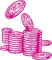

🏠
日
月
縦書き／横書き
| 【編集版】世界の大富豪2000人がこっそり教えてくれたこと＋世界の大富豪2000人がこっそり教える「人に好かれる」極意 (王様文庫) |
| トニー野中 |
|
三笠書房
世界の大富豪２０００人が
こっそり教えてくれたこと
＋
世界の大富豪２０００人が
こっそり教える「人に好かれる」極意
編集版
トニー野中
この本は、『世界の大富豪２０００人がこっそり教えてくれたこと』及び『世界の大富豪２０００人がこっそり教える「人に好かれる」極意』の冒頭部分を合本し、ａｍａｚｏｎ用に特別に配信した無料版の電子書籍です。
この本は縦書きでレイアウトされています。
また、ご覧になる機種により、表示の差が認められることがあります。
世界の大富豪２０００人が
こっそり教えてくれたこと
トニー野中
「コインの裏側」を想像できますか？
......３パーセントの本当に幸せな成功者たちから学んだこと

「トニー君、コインの裏側を見られなければ、チャンスはないよ」
ある大富豪から、口グセのように言われる言葉です。
あなたは"大富豪"という言葉から、どんなイメージを連想するでしょうか？
一生かけても使い切れないほどのお金を持ち、豪華な家に住み、高級車を何台も所有し、贅沢な暮らしを満喫している......。でも、羨ましい面ばかりではなくて、ヒマをもてあまし、周りには打算的でお金目当ての人ばかりが集まり、心をゆるせる友人がいない。心が安らがない......。
もしも、こんなイメージを思い浮かべてしまうなら、それは「コインの表側の世界」しか見ていないことのあらわれです。
確かに、いわゆる「成功者」や「お金持ち」と言われる人たちは、世の中全体で
10
パーセントほどいて、そのうちの７パーセントは、先の想像のように「お金はあっても時間がないとか、人間関係や健康に恵まれておらず、本当に幸せではない」と言われています。
けれども、
残り３パーセントの人たちだけは、違う
のです。
世の中には、莫大な富を築きながら、信頼できる愛すべき人に囲まれ、心満たされるとても快適な人生を送っている大富豪たちが、確実に存在しています。
そのすべてを手にしている「幸福な成功者たち」が、よく口グセにしているのが、「コインの裏側を見ろ」という言葉です。
なぜなら、残りの
97
パーセントの人たちと自分たちを分けているものこそ、この「コインの裏側」を知っているかどうか、にあるからです。
私は縁あって、この３パーセントの幸せな大富豪の方々にお会いする機会を多く持つことができました。
その中には、かのロスチャイルドに代表されるようなユダヤの大富豪や、
華
僑
の大富豪、ドバイに住む大富豪もいます。また、誰もが知るセレブリティーであるトップアスリートもいます。世間にはほとんど名前を知られることなく、自由気ままに生活を楽しんでいる大富豪もいます。
私は彼らから、「コインの裏側」をとらえ、幸福な成功者になる法則を学びました。
本書でそのすべてを明かしていきます。
もし４億円が当たったら、何に使う？
お金持ちになるために、一番重要なこととは何だと思いますか？
それは、儲けのノウハウでも、儲かるビジネスモデルを探し当てることでもありません。まして、頭のよさや、体力、才能も関係ありません。
答えは、自分の「器」を大きくすることです。
たとえば、４億円の宝くじが当たったとしましょう。あなただったら、いったい何にそのお金を使うでしょう？
「貯金をします」「家を買います」「借金を返します」
そういう答えでは、まず"幸せな成功者"にはなれません。
なぜなら、いずれにおいても４億円は、どんどん使われて減っていき、最初は
懐
が豊かであっても、一生涯、「お金がどれくらい減ったか」を気にし続けていなければならないからです。それでは、幸福な生き方とは言えないでしょう。
なぜ、手に入れた４億円がどんどん減っていくのか？
それは、そもそも自分の器が、４億円以上の大きさがないからです。
これがたとえば、
10
億円の器のある人ならば、どうするでしょう？
ビジネスの糧にする、金や株や不動産に投資をする......方法はいろいろありますが、共通するのは、「その４億円をもとに、何かを始める」ということです。
つまり、「この４億円をどうやってふやすか」ということに頭が向かうのです。
そして最終的には、自分の器である
10
億円にふさわしい収入を得る。こうして、一生、
「使っても使っても、お金がふえていく楽しい日々」
をすごすのです。
そんな生活を想像できますか？
それこそが、私たちが知らない、大富豪たちだけが満喫している世界なのです。
私が出会った、世
に
で
て
い
な
い
「幸せな成功者」たち
実際のところ、「お金を使っても、減ることがない」という、豊かなライフスタイルを築いているのは、ビル・ゲイツやウォーレン・バフェット、あるいはロスチャイルドといった著名人ばかりではありません。
世にまったくでていない無名の大富豪は、案外と多くいます。しかも日本にもいます。
「いやあ、トニー君、お金って減らないね」
会うたびにそう言葉を投げかけてくれる彼は、
80
歳にして、２００億円の資産を持っています。多くの不動産を所有し、毎日、愛犬と散歩がてらでかけていっては、汗水流しながら、自分が所有するマンションの掃除をしています。
別にケチで清掃会社を雇わないのではありません。
業者に委託もしつつ、さらに心を込めて、自分で細部まで清掃して回っているのです。そうやって毎日体を動かしているから、彼は非常に
「健康」
です。
いくつになっても、登山やスポーツを楽しみ、美味しいものを食べられる健康に恵まれているのです。
また、彼らは、
「時間」
にもしばられていません。
「本場の韓国料理が食べたい」と思ったら１時間後には、もう韓国に向かっているという生活を現実に楽しんでいます。
そして、素晴らしい
「人脈」
にも恵まれています。
決して孤独なんかではありません。
愛すべきパートナーや家族、いつでも助けてくれる友人がおり、本当に豊かな人的ネットワークに恵まれています。
彼らのブレーンとなってくれる"その道のエキスパート"たちも揃っています。
お金にも、健康にも、時間にも、人にも恵まれ、好きなときに好きなことが自由にできる
──それこそ私たちが知らない、幸福な大富豪の真の姿なのです。
こうした「幸せな大富豪」たちに共通しているのは、"生活の糧を稼ぐために一生懸命に働く"という考えがないということです。
その経済基盤のつくり方についても、本書で順に述べていきます。
ウォーレン・バフェットの大満足生活
「トニー君、お金で人は、幸せにはなれないんだよ」
「お金はゴールではない。必要な程度のお金があればいい。お金は、あってもなくてもいいのだ」
意外に思うでしょうが、実際には、幸せな大富豪ほど、お金に対してまったく貪欲ではないのです。これは非常に重要なポイントです。
ウォーレン・バフェットというアメリカの投資家の名は、よくご存じでしょう。毎年のように世界大富豪ランキングに入るお金持ちで、資産は６兆円とも８兆円とも言われています。
しかし彼は、今でも
50
年前に３００万円程度で購入した田舎のこじんまりした質素な家に住み、その家と妻に買った指輪が、生涯で一番高い買い物だそうです。
ところが彼は、慈善団体には、惜しみなく多額の寄付をしています。自分が死んだあとも子どもに資産を残さず、99
パーセントは寄付するそうです。
こうした清々しさを持っているから、彼のもとには利害関係を超えて、多くのファンが集まってくるのです。
大富豪の生活と言えば、ありあまるほどの物に囲まれた生活を想像しがちですが、幸せな大富豪ほど、いくら多く物を持っても幸福になれないことを知っています。だから、本筋を見失わないでいられるのです。
贅沢に明け暮れるお金持ちもいますが、彼らの周りには、やはり欲にまみれた人間ばかりが集まりますから、真に幸せではありません。そして、多くはお金に振り回されてすぐに没落していくのです。急に成功したベンチャー起業家やセレブたちほど離婚が多いことは、メディアを観ればすぐに実感できるでしょう。
しかし、私が知っている幸福な成功者で、離婚をする人など１人もいません。
彼らはお金だけでなく、愛情にも人一倍、恵まれているのです。
心のブレーキをはずして、潜在能力を全開にする法
たとえ"世の中には、すべてに恵まれた幸せな成功者がいる"ということがわかったとしても、「自分も、そうなれる」とは、97
パーセントの人が考えません。
あなたはいかがでしょうか？
ここに幸せな成功者と、そうなれない人の大きな違いがあります。
世界の億万長者たちの中には、私たちと同じか、それ以下の貧しさから身を起こした人も少なくありません。
重要なことは、彼らは決して、「自分が億万長者になれるわけがない」とは、考えなかったということです。
"サーカスの
蚤
"の話を聞いたことがありますか。蚤を小さな
瓶
に閉じ込めておくと、しばらくは逃げようとして高く跳ねますが、何度もフタに当たって失敗するうちに、高く跳ぶことをあきらめるようになります。そして心にブレーキがかかって、瓶の外にだしても瓶の高さまでしか跳べなくなってしまうのです。
幸せな成功者になるのも同じで、私たちは３、４歳のころから、さまざまな世間の常識にもまれるうちに、「自分は、これくらいにしかなれない」というブレーキが心にかかります。
しかし、そのブレーキをはずしさえすれば、空高く跳べる能力は、また再び解放されるのです。
しかも現在、どんな状況だろうが、学歴があろうがなかろうが、性別や年齢にもまったくとらわれず、大富豪になることはできます。
そして実は、この心のブレーキをはずすのは、驚くほど簡単です。
外でつかまえてきた元気な蚤と一緒にして、その蚤がはるか高くジャンプして逃げて行くのを見せてやればいいのです。するとブレーキがかかっていた蚤は「自分も跳べること」を思いだし、生まれ持った能力を取り戻します。
幸せな成功者たちは皆、富や地位を手にする前から、「自分も高く跳べる」と素直に思っています。
３６５日、幸せになれる「４つの習慣」
「成功者になりたければ、成功者の習慣を身につけなさい」
これは、大富豪になった人たちが、「あなたのように成功するにはどうすればいいか？」と聞かれたときに、必ず言う言葉です。
幸せな成功者たちは、成功してから「成功者のような習慣」を身につけたわけではありません。
成功者になる前から、まるで脳が錯覚するくらいに、あたかも自分が成功者であるかのような習慣を実践しているのです。
具体的にいえば、その習慣は次の４つに関連しています。
「お金（経済）の習慣」
「時間の習慣」
「健康の習慣」
「家族やパートナーも含めた人間関係（人脈）の習慣」
幸せな成功者になるということは、「お金」「時間」「健康」「人間関係」の、４つのことから自由になるということです。
この４つの習慣を身につければ、誰でも自然と幸せな成功者になっているのです。それが本書のテーマです。これは決して難しいことではありません。
たとえば大富豪は、多額の寄付をよくします。
東日本大震災のときに、孫正義さんが１００億円の寄付をしたのは有名です。それは、お金持ちだからできるのだろうと、多くの人は思うでしょう。しかし、彼は多額の財産を持っていなかったとしても何なりかの寄付したでしょう。
あなたがコンビニで買い物をしたときに、１円玉で数枚のお釣りがでた。ふと気づくと目の前に、義援金を募る募金箱がある。どうしますか？ 入れますか？
"額が少なかろうが、貢献する"というメンタルを大きくしていった先に、幸せな億万長者としてふさわしいメンタルがあります。
幸せな大富豪になるための習慣は、ふだんの言葉遣いから、眠る前にするべきこと、はたまた、どんな人との関わりを大事にすべきかということまで、多岐にわたっています。
本書では２０００人に及ぶ幸福な大富豪にお会いした経験を踏まえ、そのすべてのエッセンスを読者の方々に提供させていただきます。
不幸が起こるサイン
お金持ちになったのに、不幸な人生を送ってしまう人は、例外なく、「経済」「時間」「健康」「人間関係」という４つの自由のバランスが崩れています。
どれか１つが大きく欠けている、あるいは、１つだけ突出しすぎています。
典型的なのは、経済の自由だけが突出し、「人間関係」の部分が極端に悪くなっていくパターンでしょう。そういう若い社長をたくさん見てきました。
たとえば、ＩＴ企業を起ち上げてＩＰＯ（新規株式公開）で上場し、何百億円もの大金が入ってくると、すぐに豪邸や高級車を買い、金遣いが荒くなります。
また、「成功したのは、自分に才能があったからだ」と勘違いして、周囲の人への感謝がなくなっていきます。
すると、まず社員がついてこなくなり、優秀な人間がどんどん辞めていってしまいます。本人は「なんでついてこないんだ！ そんなヤツはいらない！」と息巻くばかりで、自身の心の変化を自覚できません。
同時に、それまで順調だった夫婦仲も、感謝がなくなることで壊れていきます。
陥落は、本当にあっというま。わずか２～３年で会社も家庭も崩壊します。
「家にも帰らずに仕事ばかりしているから、社員もついてきている、会社の業績も順調に伸びている」と言う社長もいますが、そういう方の場合、本人ではなく、大事な家族が病気やイジメに遭うという問題が起こることが多くあります。
幸せな成功者には、そういうことがありません。
それを避ける秘密もお教えしていきます。
私はどのようにして、「幸せなお金持ちたち」に出会ったのか？
そもそもどうして私が、世に知られていない大富豪たちの教えを提供することができるのか？
疑問に感じる方もいるかもしれません。
私は、もともとエンジニアとして日本のメーカーに入社し、通産省（現、経済産業省）の国家プロジェクトで、飛行機の次世代ジェットエンジンの開発に携わることになりました。これは日米英独伊５カ国の共同プロジェクトでした。
そのプロジェクトメンバーとして、イギリスのロールスロイス社に駐在していたのです。ロールスロイスと言えば車を想像するでしょうが、１９７０年代以降は、自動車部門を切り離し、飛行機をつくる会社になっています。
そこで中型の民間旅客機のエンジン開発を通じて、自家用ジェット機にも携わったことで、
これを所有する多くの大富豪とお会いすることになった
のです。
私のライフワークが始まった瞬間でした。
その後、私は航空機素材として欠かせないチタンという金属に精通していたこともあり、アメリカのスポーツ用品メーカーにてゴルフクラブ開発者に転身します。まさにタイガー・ウッズやジョン・デーリー、フレッド・カプルス、グレッグ・ノーマンらが使うクラブの設計に携わることになったのです。
その結果、トッププロだけでなく、彼らを支援する多くの富裕層にもお会いすることができました。私もゴルフが大好きでしたから、皆が興味を持つゴルフクラブの話を通じて大勢の成功者たちと親密になれたのです。
その後、私が働いていた大手ゴルフ用品メーカーが株主同士の利権争いにより倒産させられ、別のメーカーからのヘッドハンティングにより面接のため渡米したときに、現地でお会いした日本人の方に借りた孫正義さんの本を読み、「これからはＩＴだ！」という新たな夢を持ちます。
10
年間慣れ親しんだゴルフ業界を離れる決意を固め、毎日、図書館で勉強を始め、ＩＴ企業に就職したのちに独立起業するにいたりました。
それと同時に、大富豪たちや幸せな成功者たちから学んだことを、多くの人に知らせたいと体系化し始めたわけです。
事業は必ずしも順風満帆だったわけではありません。ＩＴバブルの波にもまれ、一文無しになったことすらありますが、
本書でご紹介している大富豪たちの教えがあったからこそ、すぐに復活することができた
のだと思っています。
本書の教えの効果は、私自身が"実証ずみ"なのです。
「お金持ちになること」を人生のゴールにしないのがコツ
「トニー君、お金というのは、何かを達成するためのツールであって、それ自体がゴールではないんだ。それを忘れてはいけないよ」
私自身は、まだまだ大富豪の域には達していませんが、しかし、大富豪の教えを実践したことで、
わずか１年で、ほとんど無一文の状態から、憧れだった新車のフェラーリを所有できるまでになりました。
自分でも驚くばかりです。
本書の教えを実践していけば、同じようなことが、あなたにも起こります。
けれども、「これだけは忘れてはならない」と、大富豪たちが口を酸っぱくして言うのは、お金はあくまで「目標を達成するための道具にすぎない」ということ。お金儲けをゴールにしたら、身を滅ぼすことになってしまうのです。
たとえばフェラーリにしても、単に物欲を満たすだけのものだったら、私も思い切って購入することはなかったでしょう。
私がフェラーリを購入したのは、それそのものがゴールではなく、自分の目標を達成するために必要不可欠なツールだったからです。また、それを所有することで「大富豪の教えの正しさ」が目に見える形で証明できましたし、もう一方では、富裕層からなるフェラーリオーナーたちという人脈を持つこともできました。
つまり、
フェラーリも１つの「道具」であり、自分を次のステップに進めるための手段にほかならない
わけです。
不幸になるお金持ちは、ここのところを間違えます。
年収が１０００万円を超えると、５０００万円の生活に憧れるようになり、死に物狂いに働いてそれを達成すると、今度は１億円を必死に追いかける......。
これでは、ネズミがエサを求めて走り回るラットレースと同じです。お金を稼いでいるようでいて、実はお金に働かされている状態であり、いつまでたっても心の平安は得られません。
幸福な成功者はそこをよくわかっているから、しっかりと、"お金を超えたところ"に、自分の目標を置いているのです。
では、どんなところに、自分のゴールを設定したらいいのでしょうか？
これが扉を開く"幸運の鍵"
２０００人を超える成功者たちは、いったい、どんなことをゴールにして自らの人生を切り開いてきたのでしょう？
当然ながら、ゴールは人それぞれ違いますが、とある大富豪が言っていた、次の言葉に集約できるのではないかと思います。
「人生の目標とは、それを達成したら、次の日に死んでも後悔はしないというようなものだ」
つまり、
自分の人生をかけて、「これができれば私の人生はよかった」と思えるもの。
生涯をかけて、「自分はそのために生まれてきた」と確信できるもの
です。
そうなると、「いつか社長になる」とか「１億円の貯金」ができたら「明日死んでもいい」という人は少ないはずです。
でもたとえば、「鉄鋼王」と呼ばれたアンドリュー・カーネギーは、いくら富を築いても真の幸福感は得られないことに気づき、「金持ちのままで死ぬのは、不名誉な死だ」と言って、人生をかけて慈善活動への投資を続けました。
具体的な目標のつくり方は後述（
参照
）しますが、一代で大富豪となるような人たちは、「大富豪になる」という目標がほんのちっぽけなものに見えるような、壮大なゴールを描いています。
だからこそ生涯、追いかけて行くことができ、ずっと現役の楽しい人生を満喫できるのです。
そしてまた、そんなワクワクするゴールに対して同じように夢を描く素晴らしい人間関係が、周りにつくられていきます。
あなたもぜひ、そのような人生を歩んでいただきたいと思います。
「なぜあの人は、大金持ちになれたと思う？」
......宝くじを当てた95
パーセントの人は、５年以内に当選金を失う
アメリカやイギリスでは、「宝くじを当てた人が、その後どうなったか？」という追跡調査が、よく行なわれます。
それによると、「宝くじの一等が当たった人の95
パーセントが、わずか５年以内に手にした当選金の全てを失っている」といいます。
「器のできていない人がお金を持っても身につかないこと」を、データは如実に証明しているわけです。
いえ、当選金を失うどころか、それ以上のマイナスを被ることがあります。
たとえばアメリカでは、宝くじに当選すると、宝くじ売り場まで乗ったタクシーの運転手まで「分け前を寄こせ！」と主張してくるそうですし、１００万ドルを当てた１カ月後に毒殺されるという事件まで起こっています。
『となりの億万長者』（早川書房）というベストセラーで知られるトマス・Ｊ・スタンリーは、その著書で
「宝くじを買う頻度と、その人の資産レベルの間には、非常に顕著な反比例関係がある」
（『なぜ、この人たちは金持ちになったのか』日本経済新聞社）ということを証明しています。
それは、「お金があるから、宝くじなんて買わない」という理由だけではないのです。宝くじの当選確率など、計算すれば、ビジネスで成功する確率よりはるかに低いとすぐにわかります。
大富豪になるような人であれば、そんな確率の低いことよりも、もっと確実に稼げることに、時間とお金を投資しようと考えるのが当然でしょう。
それでも多くの人が宝くじをほしがり、"当たる"と評判の宝くじ売り場に朝から並んでいるのは、「楽して莫大な富が手に入る」という誘惑に逆らえないからです。
「君がお金持ちになれないのは、なぜだかわかるかい？」
それは、目標（ゴール）も使い道もはっきりさせないまま、「お金持ちになれば幸福になれる」と、大金を手にすることばかり考えているからです。
そうではなく、先に、「お金が入る器」のほうを育て上げなければなりません。
"夢にも思わなかった働き方"をしている人がほとんど
......年に２００回以上、ゴルフを楽しみながら！
ビジネスの世界は、儲けを追求する世界ですから、つねに「利益を大きくしよう」「収入を上げよう」とするのが当然だと考えるかもしれません。
しかし、事実はそうでないのです。
幸せな成功者たちは、企業の経営者であっても、私たちが想像するのとは、まったく異なった働き方をしています。
たとえば、私の知る建築リフォームを営む中堅会社の社長である彼は、自分の会社から年収８０００万円ほどもらっているのですが、年に数回ほどしか会社に行きません。それも経費精算をするくらいで、実務は社員たちに任せっきりです。
では本人は何をしているのかと言えば、年に２００回以上も大好きなゴルフをし、海外旅行にも頻繁にでかけます。一年中大好きなことばかりしているのですから、さぞかし毎日が楽しくて仕方がないでしょう。
そんな状態では社員たちから、不満がでるのではないか？
しかし彼は、仕事をしていないわけではありません。ゴルフを通じて、お客さんをどんどんふやしています。しかも会社にはほとんど行かないものの、経営チェックはきちんとしていますので、社員たちからも、非常に尊敬されています。
海外の大企業のオーナー一族には、案外とこういう人たちがいます。
経営は雇った社長に任せ、自分たちは会社の権利収入で自由に暮らしています。
ときおり経営をチェックし、必要があれば人事に介入するわけです。
一方、多くの経営者は雇われ社長で、「何時間働いて、いくら」という、時間を切り売りする状態から抜けだせていません。自分で起業した人でさえも、売り上げを拡大することに追われ、仕事しかないような人生を送っています。
それでは多少のお金には恵まれたとしても、健康面や人脈面は満たされているとは言い難く、心の底から幸せを感じることはできないでしょう。
つまり、「幸せな成功者」を目指すには、時間と収入が比例するような仕事から抜けださなければならないのです。
これが「経済の自由」の意味です。
Ｓｔｅｐ１
「"お金を払うこと"とは、どういう意味だと思う？」
「幸せな経営者」と「不幸な経営者」のライフスタイルを比べると、いくら年収がふえても、それだけでは幸せになれないことに気づくでしょう。
幸せな成功者を目指すのであれば、本書で紹介する新しい習慣を一つひとつ積み上げ、"お金についての考え方"を変えていかなければなりません。
では、まず
大富豪たちにとって、「お金を払う」ということは、どういうことなのでしょう？
「生き金を使わなきゃだめだよ」
そんなふうに大富豪の方はよく言います。たとえば、食事。大富豪や幸せな成功者は、もちろん一流の三ツ星レストランで食事をしますし、それこそ１本で何十万円もするワインを開けることだってあるでしょう。しかしそれは、「誰かと食事をするとき」に限ります。
自分一人だけ、あるいは家族だけで食事をするときは、むしろ質素です。「仕事中のランチはコンビニのおにぎり」「バナナだけ」という大富豪もいました。
つまり、「今そこまで、高いものを購入する必要はない」と思えば、一切お金は使わないのです。その代わり、「今、使うべきだ」と判断すれば、いくらだろうが惜しみません。
大富豪たちがクルーザーなどを所有するのも、
「そこで船上パーティを催して、仲間たちを楽しませるため」
です。見栄のために買っているわけではありません。そこをわかっていない人がそれを購入すれば、結局は維持費に追われ、処分せざるを得なくなるのです。
彼らがお金を使うときは、単に「ほしいから」というだけではなく、一つひとつ、きちんと目的があるのです。彼らのように、目的を考えて消費する習慣をつけなければ、ただ物欲のままにお金を使う生活から抜けだせません。
もし何かほしいものがあるなら、まず買う前に、「それを購入することによって、どんな価値が自分にプラスできるか？」と考えることです。
旅行にしても、ちょっと気分転換するためだけなら、そんなにお金をかけるだけの価値はありません。しかし、勉強になるなら、いくらかかろうがどんどん自己投資すればいいのです。あとは、それを元に自分のレベルを上げるだけなのですから。
「お金を払うことの意味」を考える習慣をつくる
Ｓｔｅｐ２
「"生き金"を使うことが大事なんだ」
「生き金の使い方」に関して、幸せな成功者に共通するのは、
「自分が成長するためにお金を使う」
ということです。
それは、たとえば本を買うことも、セミナーを受けることもそうでしょう。
成功している人を見ると、「お金がほとんどないときから、数万円もするような高額なセミナーに参加していた」という人が大勢います。これも、「その勉強には、額を凌駕するだけの価値がある」「自分の成長が期待できる」と確信したうえでの、ごく当たり前の投資と考えているわけです。
音楽好きな人は愕然とするかもしれませんが、幸せな成功者たちは、「好きだから」という理由でミュージカルやコンサートに行くことは、まずありません。
ただし、「勉強になる」とか、出演者との人間関係が大切だというのであれば、高い席を購入してでも参上します。これもやはり「成長に対する投資」でしょう。
「頑張ったから、ほしかったブランドもののバッグでも買おう！」
努力が実ってボーナスなどが入ると、「自分へのご褒美」をする方がよくいます。
でも残念ながら、幸せなお金持ちたちが、そんなふうに「自分へのご褒美」にお金を使うというのは、聞いたことがありません。
なぜかと言えば、お金の使い方が、未来でなく、過去に向いているからでしょう。
ここで自分にご褒美をあげたら、そこで満足してしまう。それでは成長が止まってしまうのではないか......と。
そしてまた、そもそも彼らには、努力やチャレンジをする過程そのものが、遊びと同じように楽しいことだから、それ以上のご褒美を必要としないのです。
よく「ご褒美があればエネルギーがでてさらに頑張れる」などと言う人がいますが、実際のところ、そんなことはほしい物を買うためのこじつけで、何の効果もないことは経験した人にはわかるでしょう。
「自分へのご褒美」はしない
Ｓｔｅｐ３
神仏に願うことについて
よく、神社にお参りに行って、商売繁盛を祈願する方がいます。
いわば「儲け」を神様にお願いしているのでしょうが、幸せな成功者は、あまりそういった「神頼み」をすることがありません。
神様に対して、「○○がほしいから、ください、お願いします」と頼むことは、まずしないのです。
間違ってはいけないのは、幸せな経営者や大富豪たちが、神や宗教を信じないということではありません。
大富豪には、熱心なキリスト教徒もいれば、イスラム教徒もいますし、日本人であれば毎年のように初詣を欠かさない人がほとんどです。ただ、神様や何か目に見えない存在に「願掛けをする」ことはありません。
というのも、お金を儲けたりその他の目標を達成したりするのは、あくまで自分の努力と自分の周りの人のお陰で成し遂げることであり、そのことで神様の力を借りようなどという発想が、もともとないからです。
むしろお参りなどをするのは、感謝の気持ちを伝えるためです。
「昨年は大きな売り上げを上げることができました。ありがとうございます」
願掛けもしていないのに感謝だけするというのも不思議な話ですが、大富豪の思考とは、こういう具合なのです。他力本願でお願いだけして、叶わなかったら神様に八つ当たりなんてことは、間違ってもありません。
神仏を頼まない
Ｓｔｅｐ４
「"お金では買えない価値あるもの"を大切にしているかい？」
モノを買うなどのお金を払う行為ひとつにも、大富豪と貧乏な人との考え方の間には、大きな違いがあると、おわかりいただけたと思います。
ただ、こうした考え方は、いくらでも変えていける部分です。まさに「幸せな成功者」になるためのファーストステップだと言えるでしょう。
さて、ここでもうひとつ、「経済の自由」を手に入れるために知っておいてほしいのは、大富豪ほど「世の中には、お金では買えないものがたくさんある」とキッチリ認識している事実です。お金が絶対だとは、決して思っていません。
「お金や、お金で買えるものを所有することは大いに結構だが、それと引き換えに"お金で買えないもの"を失ってはいけない」
これは編集長として、『サタデー・イブニング・ポスト』を発行部数３００万部の人気誌に育てあげ、のちに企業家としても成功したジョージ・ロリマーの言葉。
大富豪同士の会話を聞いていても、「私のほうが金持ちだ」とか、「オレのほうがいい車を持っている」などと自慢をすることは、まったくありません。
自慢するとしたら、どれだけ健康かとか、どれだけ篤い友情に恵まれているかといった、「お金で買えないもの」についてであり、これは一緒に飲んで話をすれば、しょっちゅう話題にのぼります。
お金があれば豪邸は買えますが、家庭は買えません。
高級時計は買えるけれど、時間は買えません。
本は買えるけれど、知識は買えない。
地位や名誉は買えるけれど、尊敬は買えないのです。
いくら金持ちになっても、これらをなくしてしまえば悲惨です。大金を持つ前に、知っておくべきことです。
「お金で買えないもの」がたくさんあると知る
Ｓｔｅｐ５
「"想像するだけで心地いいこと"を究極の目標にするんだ」
「経済の自由」を手に入れるための次のステップは、
「目標をつくる」
です。
これは「幸せな成功者」になるために非常に重要な部分ですから、わかりやすく順を追って説明していきましょう。
プロローグの中で、
「大富豪たちが思い描くゴールは、"それを達成したら、次の日に死んでも後悔しないもの"」
と説明しました。「最終ゴール」とは、そのくらい情熱を傾けられ、心躍るものでなくてはなりません。
これは、テレビでセレブたちの生活を観て、「あんな暮らしをしてみたいなあ～」と
漠然と憧れる程度では弱い
のです。
もっともっと、"子どものころから一番望んでいたような、心地よいこと"である必要があります。
自分にはそんなものはないと思うかもしれませんが、案外と誰にでも「子どものころからとても心地よく思っていたこと」はあります。
ただ、「そんなことを願っても仕方ない」とか、「それじゃメシが食えないから」と大人たちから言われ続け、心にブレーキがかかった状態になっています。
それを掘り起こしていけば、自分が望んでいる目標が見えてきます。
掘り起こす方法は簡単です。
たとえば、
夜眠りかけたときや、昼間、電車に乗ったりしてウトウトと気持ちがよくなった瞬間
を利用します。このとき脳はアルファ波を発し、心のブロックが外れた状態になっています。その状態で思いついたことを、なんでもいいからメモするのです。
「産みたての卵で、卵かけご飯を食べたら美味しいだろうな......」
こんなことだって構いません。
たわいなく見えても、実はそこには「都会の喧噪から離れ、田園で楽しく仕事をしたい」といった願望が隠れている可能性もあるわけです。ひょっとしたら将来、農業に転向して大成功するかもしれません。このように心地いいと思える目標を探ることが、第一歩です。
「想像するだけで心地よくなること」を目標にする
Ｓｔｅｐ６
究極のゴールへの"最短近道"
私の研修プログラム（トニーのメンタープログラム）では、さまざまな手法で、「次の日に死んでも後悔しない目標」や「想像するだけで心地よくなれる目標」をつくっていきます。
もちろん、そうして掘り起こした目標も、ただ紙に書いて壁に貼っておくだけでは達成できません。ではどうするかと言えば、
ゴールから逆算して「何歳のときに何を実現する」というバックキャスト法で、段階的な到達目標を刻んでいくのです。
そう、
「これからの人生の年表」
をつくるわけです。
「次の日に死んでも後悔しない目標」は人生の達成地点ですから、
90
歳でも１００歳でもいいのですが、そこが年表の最後になります。
たとえば「自分の葬式に１０００人きてくれれば、それが僕の集大成です」と決めた方がいました。なかなか壮大な目標でしょう。彼は自分の人生に"生きた証"を強く求めたのです。
しかし１０００人にきてもらうとなると、それだけの関わりをこれからつくらなければいけないわけです。
その人は個人で税理士をしていましたから、顧客会社の社長１０００人と人生を終えるまでのおつき合いをすることで葬儀に１０００人来てもらおうと考えました。でも税理士というのは、個人経営が基本なので、単純に「顧客１０００人規模の会社をつくる」というわけにはいきません。
そこで、このゴールを達成するために、たとえば、いくつもの大きな会社を顧問先にして、１人でなくチームで面倒を見ていくようにする。さらにＵＳＣＰＡ（米国会計士資格）を取り、ワールドワイドに顧客層を広げることで、ついでに老後をハワイですごすという夢まで達成しようと考えたのです。
では、それらのことを何歳までにやればいいか？ そのために今年中に何をすればいいか？ こんなふうに逆算していくことで、今後の人生のプランがつくられていくのです。
この方の事例を元に、次表に「これからの人生の年表」（
参照
）の見本を掲載しましたが、ここには自分のことだけでなく、自分の周りの人のことも書いています。
面白いもので、周りの人の年齢を記入すると、自分の目標がどれくらい現実的であるかわかるのです。
ある39
歳の女性の例がいい事例です。
彼女の夫は50
代後半。"歳の差カップル"です。この彼女は60
歳になったら現在の会社を定年退職して、夫と何か新しい仕事を始めたいと考えていました。でも、年表を記入してみると、彼女が60
歳のとき、パートナーはもうほとんど80
歳です。これでは「退職してから始める」では、遅すぎます。
それなら相手が60
代のうちに動かなければいけない。ならば自分は45
歳くらいまでには自立しよう、といった目標がでてくるわけです。
また、独身の方なら、結婚して子どもをつくって、マイホームを建てて......などと考えてみる。
いったい自分が何歳のときに子どもが大学に入るのか？ マイホームを建てるときに自分の収入がどれくらいであるべきか？ そう考えていけば、「悩んでいる場合じゃないぞ！」と、やるべきことが非常にリアルに見えてきます。
ただし目標を掲げるときは、「現在、自分がどうであるか」にとらわれず、自由に描くことが必須です。
多くの人は未来を、「今現在」を基準にして考えてしまいがちですが、それはまったくのナンセンスです。未来は自分次第で、いくらでも変わるのです。
途中はどれだけ変更しても構いません。最後だけはブレないようにするのが基本です。どんな道をたどろうが、最終的には目指すゴールにたどり着く！
そうであってこそ、目標に向かって努力することが「楽しいこと」になるのです。
究極のゴールから逆算して「人生年表」をつくる
《その他の究極のゴールのサンプル》
・「アフリカ難民のための食料支援と学校をつくる」
世界中で６秒に１人の子どもが餓死していることにショックを受け、なんとか救いたいと思った女性の小学校教師のゴールです。女優のオードリー・ヘップバーンのような方ですね。ヘップバーンは女優としての知名度と財産を使って成し遂げたわけですが、この小学校の教師は海外青年協力隊への関わりを持って、支援団体組織を使って成し遂げようと考えたようです。
ゴールまではまだ30
年以上ありますが、現在はユニセフなどに募金をしながら語学に磨きをかけるため、英会話学校に通っています。
・「保健所で殺処分される犬の受け皿施設を建てる」
犬好きの男性の例です。日本では年間20
万匹の犬猫が保健所で殺処分されていることにショックを受け、なんとか自分の力で少しでも多くの動物を救済できないかと考えてゴール設定した例です。
自分で田舎に土地を買って施設をつくるだけでは、とてもカバーしきれない数なので、小目標ではＮＰＯ法人の立ち上げをするなどして多くの賛同者を募り、資金を集める計画だけでなく、ペットを捨てない環境づくりや、動物病院と連携して避妊処置が受けられる環境の整備なども盛り込まれているようです。
世界の大富豪２０００人が
こっそり教える「人に好かれる」極意
トニー野中
プロローグ
幸運、お金、ワクワクする夢、心の満足......
丸ごと手にできる！ この"人との付き合い方"
人生のすべての幸福──ビジネスの成功や、友情、愛情、お金、素晴らしいアイデアなどは、決して自分の努力だけで手にできるものではありません。
必ず"人"を介してやってくるものです。
私が懇意にさせていただいているロスチャイルド氏をはじめ、「幸せな大富豪」たちといるといつも感じるのは、彼らがうらやましいほど
"人"に恵まれている
ということです。明るく愛情深いパートナーや家族、喜びを分かち合える友人、アイデア豊富なビジネスパートナー、互いに
切
磋
琢
磨
して成長し合えるよきライバル......。
しかも皆、ともに栄えよう！ という豊かで寛大な心の持ち主であり、苦しいときも裏切ることがありません。生涯、笑顔で付き合っていける誠実な人ばかり。
彼らが夢を叶え、巨万の富を築くことができたのは、才能より、運より、何より、そんな素晴らしい人脈のお陰であると感じるのです。
そう、世の幸せな成功者たちは、"人付き合い"の達人なのです。
実は、大富豪には、「幸せな大富豪」と、「不幸な大富豪」の２種類があります。
本書で紹介するのは、「お金」はもちろん、「人間関係」「自由な時間」「健康」の４つの宝にも恵まれた、本物の幸福を手にしている人たちです。
これに対し、「不幸な大富豪」とは、お金はあっても、「人間関係」「自由な時間」「健康」の宝のうちのどれか（あるいは全部）が著しく欠けています。
子供の教育問題や離婚問題、あるいは病気に悩まされ、仕事に追われて好きなことをする時間もなく、日々、不機嫌で、孤独感や
猜
疑
心
に苦しんでいます。
よく「金持ちの周りには血も涙もない冷酷な人ばかり集まる」などという人がいますが、
そういう邪
な人間が集まるのは、「不幸な金持ち」たちだけ
の話です。
人に恵まれると、富にも恵まれるという「仕組み」
幸せな大富豪たちは、人間的魅力にあふれ、誰からも好かれています。
つまらない「しがらみ」にとらわれず、周囲に不快感を与えることなく、人付き合いをしなやかに切り抜けるのが得意です。
立場的に、誰かに何かを強制・命令されることはほとんどありませんので、好きな人とだけ仕事をしたり遊んだりする自由はありますが、かといって嫌な人と付き合わないわけではありません。
皆が苦手とする人さえも味方に付け、自分をステップアップさせるエネルギーに変えてしまうのです。
彼らは、人と関わることにおいては、手間も時間も、費用も惜しみません。
たとえば、今、遠く離れた海外にいる友人がトラブルに巻き込まれて困っているとなれば、スケジュールを変更してでも飛んでいきます。
誰かを喜ばせるためだけに、自らハンティングをして獲物をしとめ、料理も学んで、土から改良した畑で育てた最高の食材でもてなす......なんていうこともあります。
なぜ、人と関わるために、そこまでするのか？
それは、「純粋に楽しいから」というのが第一の理由です。
これは９割の人が聞き流してしまうところですが、かなり重要なところです。
彼らが人と付き合うとき、基本的には、「この人と関わればメリットがある」とか、「儲かるだろう」などという打算は持っていません。
打算はありませんが、好奇心旺盛で、"よいもの"はどんどんシェアしたい、という意欲を持っていますので、彼らの間には、よりよく生きるための知恵や、おトクな情報が、日々、縦横無尽に飛び交っています。
そして、そんな心豊かな仲間と接するうちに、自然とビジネスを飛躍させるすごいアイデアが次々と湧いてくる......。
結果的に、そこから、幸運もお金も、無限に生み出されるというわけです。
いったい、どうしたら、そんな素敵な人間関係を築けるのでしょう？
その秘訣を大富豪たちから学ぶ......というのが、本書のテーマです。
彼らの人間関係は、お金を使って築いたものではなく、
「お金を持っていなかった時代からずっと培ってきたもの」
が、土台になっています。
本書で述べる"人付き合いの極意"を積み上げていけば、あなた自身が幸せな成功者の仲間入りをすることだって夢ではないのです。
それでは新しい出会いを求め、ぜひ本書の扉を開いてみてください。
トニー野中
第１の極意
人に好かれる大原則
──「なぜ君は、僕に会いたいと思ったんだい？」
誰にでも簡単にできるのに、９割の人がやっていない"帝王の教え"
幸せな成功者たちは、人生経験が豊かであるゆえ、話題が豊富ですし、実にさまざまな教えを説いてくれます。
ですがそれは、こちらが問うたときであり、普段は、彼ら自身はあまりしゃべりません。
そう、大富豪の中には、案外"シャイで無口"な人が多くいるのです。
シャイでありながらも人見知りをして引きこもるようなことはなく、積極的に人に会って"話を聞くこと"を楽しんでいるわけです。
「なぜ口はひとつで耳が２つあるのか、知っているかい？」
かつて大富豪から、こう問いかけられたことがあります。
その真意は？
「しゃべること（口ひとつ）の２倍（耳２つ）、相手の話を聞くようにしなさい」
ということです。
たいていの人は、とくに自分をアピールしたいと思うと、相手の話を聞くより、自分が多く話してしまいます。しかし、人に好かれる大原則としては、自分の口は閉じ、話すことの２倍は聞くように徹する必要があるのです。
相手は自分の話を聞いてもらえれば、自分が認められていると感じ、あなたのことを好きになります。
彼らに会った人たちが皆、大喜びして、「この人と長く付き合っていきたい」と熱望するのも、「有用な情報を得られたから」というよりも、「自分の話を聞いてもらえた」という満足感が大きいからでしょう。
成功者たちのこうした"聞くこと好き"の傾向は、必然的に味方をふやし、優良な情報をどんどん集めます。
さて、どの大富豪たちも"聞き上手"である理由のひとつは、彼らが学ぶ帝王学の中に、この教えが組み込まれているからです。
帝王学とは、王になる者が学ぶ、それにふさわしい素養や見識のこと。子孫を未来永劫、繁栄させる
叡
智
が盛り込まれたものです。
その中のひとつ、「話すより聞け」というのは、誰でも学べるもっともシンプルな基本ルールでしょう。それなのに、９割以上の人が実践できていません。
本書で紹介するこうした極意を実践して信頼を積み上げていくと、どうなるか？
究極の姿を次の項でお教えします。
話を聞けば、人にも情報にも好かれる。
普通の人が知りえない"超極秘情報"を運んでくれる人物
仕事熱心な人ほど、常に何かいい情報が得られないか、という姿勢で周囲の人と接してしまうものです。書店にあふれる、「情報を聞き出す質問テクニック」や「人を動かす心理学」の
類
の本を読んで勉強した人も、多いことでしょう。
しかし、大富豪たちがそうした「質問テクニック」に優れているかといえば、そんなことはありません。なぜなら、そもそも質問して聞き出す必要がないから。
"価値ある、いい情報"のほうから勝手に、やってくるからです。
つまり、"価値ある、いい情報"は、周囲の人たちが率先して運んできてくれるということです。
なぜそんな "虫のいいこと"が起こるのでしょうか？
それは、情報を持つある人物たちが、彼らに情報を渡せば、世の中のためになる正しい投資がなされる、と信じているからです。
その投資が世界のバランスを保ち、紛争を防ぎ、貧困に悩む経済弱者を救済し、新しいビジネスを生み出すとわかっているからです。
大富豪たちが、富を年々倍増させていく秘密は、ここにあります。
では"ある人物たち"とは誰でしょうか？
いったい、どんな価値のある情報をもたらしてくれるのでしょうか？
一番重要な情報源は、スイスなどのプライベートバンクの担当者です。彼らは悪質な手法を用いない、極めて信用度の高い人たちであり、だからこそ、世界中の大富豪たちが資産を預けています。
よって、世界中の富に関する有力で秘匿性の高い重要情報のほとんどが、ここに集まってくるわけです。
中には、一国の運命を左右する情報もあり、当然、そんな重要な情報が、不特定多数が閲覧できるテレビやインターネットなどに流れることはありません。
プライベートバンクの人間が流したこうした情報が、具体的な投資案件になっていき、富める者だけでなく、貧しい者たちも救うことになるのです。
上等な情報とは、このように信頼関係の中で、お互いのメリットを考えて自ら開示されていくものです。
ですから、有益な情報がほしければ、情報を聞き出すワザを学ぶより、とにかく信頼される人間になることが優先されます。
いきなり大富豪と同レベルの情報を得るのは難しくても、本書のことを実践して信頼を蓄積し、いい人脈ができてくれば、社内から、社外から、そして銀行から......必ず自然と有益な情報がもたらされるようになります。それがあなたを変革し、成功レベルを押し上げていきます。
まず、信頼を築く。
「お金は、こんな『ほめ上手な人』が大好きなんだ」
「人の話をよく聞く」ということのほかに、人に好かれて信頼を得るために、幸せな成功者たちが実践しているシンプルな習慣が、もうひとつあります。
それは、「相手をほめること」です。
「機会があればいつでもほめるべきだ。ほめられた人は、乾いた植物が水を吸うように、ほめ言葉を吸い込むでしょう」
（『メアリー・ケイの人を活かす
23
章』東洋経済新報社）。
これは、化粧品ブランドを立ち上げて世界でもっとも成功した女性起業家のひとり、メアリー・ケイ・アッシュの言葉です。
人もお金も、ほめ上手なところに集まる
── これも帝王学にある教えです。
実際、幸せな大富豪たちに接すればわかりますが、彼らは決して高飛車ではありません。傲慢に人を見下したり、偉そうに叱ったりすることもありません。
彼らは、とりわけ、間
接
的
に人をほめて、人の心を魅了するのがうまいのです。
たとえば、ある大富豪が、Ａ社長と知り合って話したとしたら、その場でＡ社長のことをほめるだけでなく、別の機会に、別の人、Ｂ氏に会っているときにもまた、Ａ社長のことをほめます。
「あのＡ社長は、○○に精通していてね、すごいんだよ！」
もしも、Ａ社長とＢ氏が知り合いならば、いずれＡ社長にはＢ氏から「あの大富豪があなたのことを、ほめていましたよ！」と伝わるはずです。
Ａ社長は、すでに先日、直接ほめられて気分よくなっていたところに、さらにまた大富豪がほめていたと、Ｂ氏から間接的に知らされることで二重に感動し、大富豪に強く好感を抱くことになるというわけです。
でも、実際のところは、Ａ社長とＢ氏が知り合いでなくてもいいのです。
なぜなら、大富豪は、Ｂ氏の前でＡ社長をほめた時点で、「この人といれば、自分のよい評判も広まっていくだろう」と、Ｂ氏からの信望を得ているからです。
また、次のようなテクニックも、よく使われています。
「あなたの会社の社員は、優秀な人が多いですね」
「パーティでお話しさせてもらったけど、君の奥さんは素晴らしい方だよね」
などと
相手の会社の社員や奥さんをほめる
のです。
そんなことをいわれたら、相手は自分の選択眼や指導に間違いはなかったと自信を持てますし、自分自身がほめられるよりも嬉しいことさえあるでしょう。
そしてそれがまた後日、彼の口から社員や奥さんに「君のことを○○氏がほめていたぞ！」と間接的に伝わったとしたならば、その社員や奥さんの心までもガッチリとつかむはずです。そうなれば、相手の腹心の人たちを丸ごと味方に付けることができますね。だから、仕事でも情報でも、いいものが集まってくるというわけです。
人もお金も、ほめ上手な人のもとに集まる。
「君は運のいい人間かい？ 運の悪い人間かい？」
右の質問は、日本の大経営者、松下幸之助さんが面接のときに必ず聞いた質問として有名です。
「運がいい」と答える人は採用、「運が悪い」と答える人は不採用としたそうで、この考え方は、大富豪たちが付き合う人を選ぶ基準に通じるものがあります。
実際、私も
「その人の額
を見れば成功するかどうかがわかる」
といっていたオーストラリアの大富豪にお会いしたことがありました。
額からどう判断するのかはいまだ不明ですが、このように
大富豪たちは、「こいつは運に恵まれている」と直感する人間を、交友関係に加える
傾向があります。
それは本当に直感です。相手の経歴を、根掘り葉掘り調べるようなことはしません。でも私が知る限り、その直感はほぼ的中しています。
なぜ成功者たちが「運がいい人」にこだわるかといえば、運がいい人と付き合えば、自分にも、ツイていることがどんどん起こるからです。
逆に運の悪い人と付き合えば、自分の運気も下がります。
私自身は、ありがたいことに２０００人以上にのぼる、世界の超運がいい大富豪たちと交友関係を築いて以来、ツイていることが次々と起こり、お陰様でこうして著書も次々と出すことが可能になっています。
どうすればそんなふうに大富豪と親しくなれるのですか？ と、よく聞かれるのですが、私は何か特別なテクニックに
長
けていたわけではありません。
むしろ、ただ相手が私に興味を持ってくれただけのように思います。
なぜ彼らが興味を持ってくれたのかというと、ジェット機のエンジンやゴルフクラブなどの開発に携わっていたため、彼らが喜ぶ最新技術の知識があったことは確かにあるでしょう。
ただ、それらに興味のない大富豪たちとも親しいので、つきつめるとやはり「自分を、運がいいと思っていた」ということになるのです。
こういう話をすると、「ならば、ツイてない自分に、いい人脈なんてできるわけがない」「こんな自分を好きになんて、なれない」などと嘆く人が出てきます。
けれども、ここでいう「運」とは、そういう話ではないのです。
「自分を運がいい」と確信するということは、能力や性格を度外視して、「ありのままの自分を好きになる」ことです。
大富豪たちの多くは、確固たる成功の保証もないのにリスクに挑み、成功を手に入れてきた人たちです。自分のことが大好きで、持って生まれた自分の運を無条件に信頼していなければ、そんな無謀なチャレンジはできないでしょう。
よって、同じように自分が好きで、自分を信じる自由な精神を持つ人間を好きになるのです。
あなたがどんな人生を送ってきたにせよ、今からでも十分「運がいい人」になれるし、自分を好きになることはできるのです。
そして、自分を好きになれば、自信を持って一歩を踏み出せます。
では、どうすれば「運のいい人」になれるのでしょうか？
順に説明していきます。
「自分は運がいい」と心底確信すれば、すごい人脈がつくられる。
「これは心理テクニックなんかより、はるかに重要な核心だよ」
本書で紹介する大富豪たちは、必ずしも生まれつき裕福な家に育ったわけではありません。たいていは貧しい時代から努力し、苦労した末に、成功をつかんでいます。
ただ、彼らが貧しかった時代に自分のことを不幸だと思っていたかといえば、そんなことはありません。
その当時から、自分は将来、必ずうまくいくと確信していたし、「いいこと」があろうがなかろうが、自分は恵まれていると、心の底から思ってきたのです。
彼らがいかに自分を信じているかがよくわかる、象徴的な話があります。
ある成功者が、ちょっとした誤解で海外の刑務所の独居房に入れられてしまいました。
普通なら、「大変なことになった！ 自分はどうなってしまうのだろう？」と不安になり慌てふためくところですが、この成功者は、「ああ、そういえば最近、ゆっくりひとりでものを考える時間がなかったなあ」と、獄中で書き物を始めたのです。
「いずれ誰かが出してくれるだろう」と、ほとんど自分の運命を疑わなかったそうで、実際に、その通りになりました。
そんな感覚を持っているから、やっぱり彼らは、同じように自分を「運がいい」と思っている人たちを引き寄せるのです。
では、私たちが付き合う人を選ぶとき、「自分は運がいい」と心底信じている、将来、成功が期待できる人は、どこで見極めればいいのでしょうか？
ヒントは、どんな状況にあっても自分を大好きでいられる人です。
明るくて、見るからに楽しそうで、素直で謙虚。不平や不満をいわない人。
「たまたま勤めていた会社が倒産してしまって、失業しちゃったんですよ！」などと、不幸な状況も明るく語れるような人なら、ほぼ成功は間違いないでしょう。
また逆に、自分がいい人脈をつくりたいなら、まずは自分を肯定して好きになり、今、どんな境遇にあろうが、それを「運がいい」と信じるようにすること。
それがポイントです。
これは、小手先の"心理テクニック"や"コミュニケーション術"を学ぶよりも、ずっと重要なことです。大富豪たちから学ぶ人付き合いの極意は、非常に核心的であり、あなたの意識的変革を迫るものです。だからこそ、真に幸福な人生が切り開かれるのです。
では、どうしたら「自分は運がいい」と信じられるのか？
その具体的方法を見ていきましょう。
テクニックより、自分の運のよさを信じることが重要。
「自分を根本から劇的に変える、すごい方法を明かそう」
あなたが「人に好かれる」極意を学ぶのは、どうなりたいからでしょうか？
前項で「自分を運がいいと思いなさい」「自分を幸福だと思いなさい」......と述べましたが、いくら頭の中でそう繰り返しても、意識は簡単には変わりません。
けれども、意識を変える方法はあります。
それは、「自分を運がいいと思っている人」や「自分は恵まれていると思っている人」と、ともに時間を過ごすのです。
すると、嫌でもあなたの意識も思考回路も、彼らに近いものに変わっていきます。そう、「素晴らしい人との出会い」は、間違いなく自分を大きく変えてくれるのです。
だからこそ、「仕事にメリットのある人脈がほしい」といった、目先の利益のための人脈づくりを捨てて、もっと根本から自分の運命を変えるようなビッグな出会いを求めてほしいのです。
「なぜ君は、この僕に会いたいと思ったんだい？」
実は、この問いこそ、本書の核心に迫るものです。
私は、ある経営者交流会にて、世界の金融経済を陰で牛耳っている人物がいると聞き、
そんな人に会ったら、自分が根本から劇的に変われる気がしました。
かのロスチャイルド氏と私が交流を持てたのは、そんな思いがあったからです。
そして、「ぜひ会いたい」と強く願ってきたから、出会いのチャンスをつかめたのです。
さて、念願のロスチャイルド氏に初めてお会いしたときに話したことといえば、カラオケやゴルフ、車のフェラーリのことなど、たわいもないことです。
ただし私は、そんな雑談でも彼の話に真剣に耳を傾け、また、彼の質問には社交辞令を交えず、
真
摯
に本音で答えました。
ロスチャイルド氏ほどの人が、真剣に私の話を聞いてくださっている。何よりそれが嬉しかったのです。
結果、そんな雑談からでさえ、「私は、あなたから多くのことを学びたい」という熱意と、「あなたに会えて本当に幸せです」という気持ちが、彼に伝わったようです。だから懇意にお付き合いできるようになれたのでしょう。
「この人から学びたい」と強く望んでいたら、出会いのチャンスが舞い込んできて、それが人生を変える大切な人脈に発展していったという例は、いくらでもあります。
日本を代表する起業家、孫正義さんの躍進も、憧れの経営者、日本にマクドナルドを根付かせた
藤
田
田
氏に会う機会を得て、彼が師匠的な存在になったことが始まりだったといいます。
まず、「この人に会いたい」という強い意思を持ち、「会う」と決意してください。
そして、「会ったら何を話そう？」「こういうことを聞きたい」ということまで、実際にその機会が訪れたときに慌てないように、シミュレーションして準備しておいてください。
こうした意識変革をしたうえで本書の核心的なメソッドを学べば、確実にあなたの対人関係は好転していきます。
成功者とともに過ごすと、意識が変わる。
第２の極意
付き合う人を選ぶ
──「それはいえません、いったら私の首が飛びますから！」
「時間にルーズな人とは、付き合わなくていい」
私がお会いしてきた幸せな成功者たちは皆、共通して、
「心を満たすには、『お金』『人間関係』『時間』『健康』の４つの自由が欠かせない」
と考えていました。
つまり、「お金」に関しては権利収入などを持っていて、不動産収入や株式配当、印税などがたっぷり入ってきます。ですから、高いから買わないとか、お金がないからできないという不自由がありません。
「時間」に関しても、仕事にしばられていないゆえ、１日を好きなように使えます。
「健康」もしっかり管理していますから、スポーツも遊びも食事も、タフに思いっきり楽しめるわけです。
そして特筆すべきは、ビジネスで大成功した人は、この４つの中でもとりわけ「時間」を大事にする傾向にあることです。
ということは、彼らのその大切な「時間」を奪うような人が、彼らの仲間に加われるはずがないということです。
約束をすっぽかす人は論外で、遅刻する人や同じ質問を何度もする人も嫌われます。実りの少ない集まりも避けられます。ですから、「幸せな成功者」たちと付き合いたいなら、あなたもこの点に厳格にならなければいけません。
仕事と関係ない、遊びの予定ならば遅刻ぐらいしてもいいのでは？ そう思うかもしれませんが、それは違います。成功している人ほど、プライベートとビジネスの境目がないからです。
つまり、彼らの感覚では、遊びの予定だろうが寝床に入る予定だろうが、自分の意志で"その時間にそれをする"と決めたなら、原則、遅れずに実行することが大事なのです。
ちなみに、「時間対価値」をあらわすものとして有名なのは、毎年、インターネット競売にかけられる、「投資家のウォーレン・バフェットと食事をともにする時間の権利」でしょう。落札すれば、バフェットとのランチに同席できるという権利で、２０１２年には、およそ２億７０００万円という価が付きました。
支払う側は、「彼と会食する時間には、それだけの価値がある」と考えているということです。
ちなみにバフェットのほうは、チャリティです。お金はすべて慈善団体に寄付されるようです。
遅刻やムダ話をして、相手の時間を奪わない。
「なぜそんなに時間が大切なのだと思う？」
霊園の経営で成功した、ある四十代の社長から聞いた話です。
彼は自分の経営する霊園に、「ハピネスパーク」という名前を付けました。
最初、彼は、「死」を扱う霊園に、「ハピネス（幸福）」などと名付けていいものかと非常に悩んだそうです。周囲には不敬だと批判する人も多くいました。
しかし彼は、とことん考え抜いた末に、
「死ぬことは、幸福であるべきなんだ」
という結論に達します。その理由をこう語っていました。
「どんな人でも、死ぬ確率は１００％だからです」
幸せな成功者たちも、「自分も必ず死ぬ」と、「死」を意識しているからこそ、今日を精いっぱい楽しもうとするし、５分でも、時間を大切に使おうと考えます。
時間だけは、どれだけ大金を積んでも、延ばすことはできません。
だからこそ、しっかりと目標を立て、計画を練り、スケジュール通りに行動してベストを尽くすのが、生きている者の務めであり礼儀だ......と、彼らは考えるのです。
それを知れば、彼らの時間をムダにする人が、言語道断なのがよくわかるでしょう。
「時間にルーズな人と付き合うと、テンションもエネルギーも落ちてしまう。時間にルーズな人とは付き合わなくていい」とまで彼らがいうのは、そのためです。
今よりさらに「他人の時間を大切にする」意識を持つだけで、それにふさわしい、ほんの
30
分会っただけですごい価値をもたらしてくれる人が、あなたの人脈に加わってきます。そして、あなたの人生が、何倍も濃く充実したものになっていきます。
「死」を意識して、時間を大切に使う。
「１ページだけなら読んでやるが、それ以上なら捨てる」
人の時間を奪わないことは、信頼を築くために大事なことですが、見落としがちなのが、上司や顧客とのコミュニケーションです。
遅刻をしない、締め切りを守るという基本事項は、実践できていて当たり前。それすら危うい人は、人脈づくりの前にその悪癖を直すべきでしょう。
とくに気を付けたいのは、「報告」です。
整理できていないまま、ダラダラと説明を述べて、「それで、結論は何？」と聞き返された経験はありませんか？
また、長たらしいレポートや企画書を読ませるのも、やはり「相手の時間を奪うこと」になります。
まず結論を述べ、簡潔に報告ができる人ほど、「この人に仕事を任せると、自分の時間を有効に使える」と、上司や取引先から重宝されます。
「１ページだけなら読んでやるが、それ以上なら、秘書にゴミ箱に捨てさせる」
そういったのは、イギリスの首相だったチャーチルです。
報告を短くまとめられないのは、「自分もわかっていない」ことの証し。そんなものを相手に読ませることは、そもそも失礼に当たるでしょう。
また、日本ではとかく、結論の出ないムダな会議が行なわれがちですが、もしあなたがマネジャー職であるなら、こうした時間は極力削るべきです。
欧米の経営者はこれを非常に嫌い、ロスのない簡潔な会議を、「
フルーティフル
・
ミーティング
だった」とほめ称えます。
相手の時間を奪わない気配りと「実りある時間」をもたらすことこそ、信頼を勝ちとるために演出すべき点なのです。
「報告・提案」は結論を先に、簡潔に。
騙されないために──お金を運んでくる人の見抜き方
「儲け話を運んでくる人の信頼度」はどう見分けるのかというと、これはすでにお金持ちの人とそうでない人で、若干、答えが違ってきます。
すでにお金持ちの人は、経験からくる勘が働きます。
相手が儲け話を出してきたときに、「しっかり自分の目を見て話しているか」「握手した手を強く握り返すか」など、さまざまな要素から相手を見ています。
最終的には、「なんともいえない違和感を覚えるかどうか」という直感が判断基準になるのですが、それでもほぼ的中するのです。
では、まだ成功者でもお金持ちでもない人の場合、どう見分ければよいのか？
ほとんどの場合、それを見分けることができないので、一番の防衛策としては、自分自身の意識を変えることが大切です。
「お金のためなら人を踏み台にしても構わない」と考える人は、同じ考えの人を引き寄せます。
ですからその場合、相手がお金を運んでくることは、ほぼありえないでしょう。
逆に、「無償の愛で相手に何かをしてあげたい」とか、「困った人に経済的な援助をしたい」と考えている人は、やはり同じような人を引き寄せます。
次の項では、幸せな成功者たちが人のどんなところを見ているのか、具体的に明かしていきます。
自分自身を見つめれば、相手の人柄もわかる。
品格、服装、顔......彼らが人を選ぶとき、どこを見るのか？
実は、成功者や大富豪たちが人を見るとき、どこを重視しているかというと、本人の経歴とか、過去の実績、名刺に書いてある肩書きではありません。
服装でも、持ち物でも、品格でもありません。
"品格"は、一時期、人を判断する際の材料のようにもいわれましたので、それが大事だと考える人も多いでしょう。けれども、品格などというものは、ある程度演出できてしまうのです。
たとえば、時計、あるいは靴は、相手の生活レベルを知る指標にされ、一流ホテルの従業員がチェックしているところでもあります。それを知っていれば、簡単に偽ることができますね。
また、幸せな成功者や、そうなる可能性のある人たちには、カジュアルないでたちの人が多いし、そもそもファッションにお金をかけない方も多いので、"服装"から見極めるのも容易ではありません。いかにも高級ブランドで身を固めて......という人は、背伸びをしているだけのことが多いのです。
すると、残るは"顔"しかないわけです。
では、どんな顔の人を選ぶのか？ というと、これを言葉で説明するのは容易ではありませんが、彼らにいわせると、ポイントはこうです。
「つくりでも表情でもない。"顔つき"が大事なんだ」
ひと言でいうと、自分と同じような幸福感が顔ににじみ出ているか、ということのようです。
たとえ生まれつき
強
面
だとしても、あるいは緊張していたとしても、何か人を惹き付ける幸福感が出ている。そして、経験によって培われてきた穏やかさや優しさが、ありありとあらわれている。
多くの挫折を乗り越えた経験は、顔に深みや強さ、愛情深さ、慈愛深さを醸し出します。また、失敗して辛い経験を重ねることで、人の痛みがわかるようになるので、相手を思いやる気持ちが芽生え、表情も優しくなりますね。
これは、たんに幸せに遊び暮らしているだけでは、つくれないものです。
多くの富裕層とお会いしてきたお陰で、私も幸せな成功者や、そうなれる可能性のある人が、なんとなく顔つきでわかるようになってきました。
これは、日本人がアジア人を見て、「あの人は中国人だろうな」とか、「少なくとも日本人ではないな」とわかるのと似ています。
欧米人からすると区別がつきませんが、長く日本人として生活していると、感覚としてつかめてきます。これと同じで、幸せな大富豪も自分と同じ人がわかるのです。
挫折や困難を明るく乗り越える経験が"いい顔つき"をつくる。
誰もが「見かけ」で判断されている
大富豪たちに限らず、人は、想像以上に見た目で相手を判断しているものです。
これは、「だから好印象を持たれるように、外見を工夫しよう」といった単純な話ではありません。
もっと、するどく本質を見られているのです。
かつて私の娘が、誰もが知る、ある外資系ファストフードのアルバイトに採用されたことがありました。希望者が非常に多い超人気のアルバイトです。
ここではときどき、従業員やその家族を招待して、好きなだけ店のメニューを食べられるという従業員奉仕イベントを開催しています。
私は、「面白そうだ」と思い、娘に連れられて行ってみました。
すると、ちょうど娘の面接をした店長さんにお会いできたので、軽い気持ちでたずねてみたのです。
「どうしてうちの娘を採用されたのですか？」
すると店長さんはものすごく真面目な顔をして、困ったようにいうのです。
「すみません、それはちょっといえないんです。それをいったら、私の首が飛びますから......」
意外なことに、それほど重要な企業秘密だったわけです。
娘に聞くと、長い時間の面接ではないので、おそらく見かけのどこかで判断したのでしょう。しかし、店頭で働くアルバイターたちを見ても、外見に共通点があるとは感じません。ただ、皆さんしっかりしているし、非常に真面目で仕事熱心であるとは感じます。
つまりは、そういう真面目に働く資質を、なんらかの見かけ情報から判断しているわけです。
これは、心理学的なものより、長年、人を採用してきてわかった経験則から導き出されたものだと思います。なぜなら、多くの一流企業がそういうノウハウを持っていると聞いたことがあるからです。よく外資系の企業では、わざわざパーティを開き、そこで担当者が応募者のチェックをしています。
ちなみに、娘のアルバイト先の合否ポイントについては、後日談があります。
どうしてもそのポイントが知りたかった私は、ある日の家族招待の折に、まんまと別の社員から、そのうちのひとつを聞き出すことに成功しました。
どうやら、
人の目を見て話せるかどうか
がチェックされていたようです。
この店では、接客の基本は人の目を見て話せることで、これができる人は自分に自信を持って行動でき、なおかつ相手に好印象を与えると考えているようです。
確かに大富豪たちも、必ず相手の目を見て話します。
相手の目を見て話す。
"いつだって選ばれる人"になるための３原則
大富豪や幸せな成功者から好かれるには、どうすればいいのか？
まったくテクニックがないわけでは、ありません。
もちろん、前述の"相手の目を見て話す"ことは、とても大切です。
話しているときに、目が泳いでしまったり、落ち着かなかったりするようでは、やはり「信用がおけない」と見なされます。自信を持ち、誠意を持って相手の目を見ることが重要です。
２つ目としては、"相手に好意を持つこと"。
当然ですが、「嫌だな」「怖いな」という印象を持っていると、それはしっかり相手に伝わってしまうものです。
自分が「嫌だ」と感じるならば、たいていは相手のあなたに対する印象も、「嫌だ」なのです。
相手に対して、「嫌だ」「怖いな」「不安だな」......仮にそういう感情を抱くとすれば、自分の側のどういう理由が不安感を駆り立てるのか？ しっかり自己分析してみるといいでしょう。
たいていは、「粗相をしてしまったら恥ずかしいから」「気難しい人だったら怖いから」といった、たわいないことが理由であり、まだ相手をよく知りもしないのに、余計な心配をしていると気付く場合が多いものです。
３つ目は、"「その人に会う目的」を、自分の中で明確にしておくこと"です。
明確な目的を持ってあなたが「その人物と付き合いたい」と思っているなら、そういう雰囲気を、あなたは自然と醸し出しますし、それが相手に伝わります。
逆にそれが伝わらないのなら、まだその出会いは早いのかもしれません。
あるいは、先に出会うべき人が、ほかにいるのかもしれません。
大事なのは、特定の個人にとり入る努力をすることではありません。
いずれその人たちと肩を並べる人間になることを目指して、経験を積み、成長することです。
そうやって「なりたい自分」に近付いたころには、とり入る努力などしなくても、社会や世界のほうから認められるでしょう。
人は、自然と自分と同じ波長の人を惹き付けます。
出会いに偶然はありません。
相手に「好意」を持ち、会う「目的」を明確に。
トニー野中（とにー・のなか）
１９６２年生まれ、岐阜県出身。
株式会社ＩＨＩにて、ジェットエンジンの設計開発に携わったあと、５カ国共同開発エンジンの国家プロジェクトメンバーとして英国ロールス・ロイス社に勤務。その後米国に渡り、ジェットエンジン開発技術を用いて、タイガーウッズなど世界のトッププロのゴルフクラブ開発に携わる中、ロスチャイルドをはじめとする、多数の大富豪やセレブリティーと懇意になる。２００３年、独立。
現在、ＩＴ企業、投資会社など、計５社の経営をする傍ら、たんなる「成功」が目的ではなく、「お金・時間・健康・人脈」のすべての面で満たされた幸福をつかむことを人生の目的とする「成幸研究家」として、世界中の大富豪たちの習慣、考え方を研究し体系化している。
著書に『世界の大富豪２０００人に学んだ 幸せに成功する法』『世界の大富豪２０００人に学んだ富を築くお金の知恵』などがある。
本作品の全部あるいは一部を無断で複製・転載・配信・送信したり、ホームページ上に転載することを禁止します。
本作品の内容を無断で改変、改ざん等を行うことも禁止します。
また、有償・無償にかかわらず本作品を第三者に譲渡することはできません。
世界の大富豪２０００人がこっそり教えてくれたこと＋世界の大富豪２０００人がこっそり教える「人に好かれる」極意
編集版
発行日 ２０１４年９月20
日
著 者 トニー野中（とにー・のなか）
発行人 押鐘太陽
発行所
三笠書房
〒１０２－００７２
東京都千代田区飯田橋３－３－１
０３－５２２６－５７３１
http://www.mikasashobo.co.jp
制 作 誠宏印刷株式会社
(C) Tony Nonaka
●三笠書房『世
界
の大
富
豪
２０００人
がこっそり教
えてくれたこと』（２０１３年10
月20
日 初版第１刷発行）及び『世
界
の大
富
豪
２０００人
がこっそり教
える「人
に好
かれる」極
意
』（２０１４年４月20
日 初版第１刷発行）に基づいて電子書籍版は制作されました。